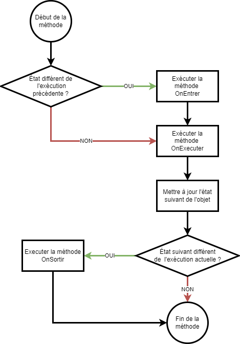

4 Programmer la logique du jeu ou de la simulation
Temps requis
30 minutes
Une machine à état fini est un type simple d'automate qui, dans la hiérarchie des automates finis et déterministes, se situe juste au-dessus de la logique combinatoire (semblable aux opérateurs logiques avec lesquels vous travaillez depuis votre premier cours de programmation). On utilise ces automates lorsque la gestion des comportements d'un objet devient difficile à effectuer à l'aide seul de conditions logiques.
La théorie de la machine à états finis
Une machine à état est composée de deux parties :
Des états qui représentent le comportement actuel de l'objet;
Des transitions qui permettent de passer entre les états.
On peut représenter une machine à état sous forme d'un diagramme, avec des boîtes pour les états et des flèches pour les transitions. Voici l'exemple d'une machine à états qui gère le comportement d'un arbre.
Les idées derrière le code de la machine à états vont être les suivantes :
Séparer dans des classes distinctes l'exécution de l'état;
Séparer le déclenchement des transitions vers un autre état;
Permettre à l'état actif de l'objet d'exécuter du code à chaque frame.
Afin d'encapsuler le passage entre les états, chacun est responsable de gérer les transitions vers le prochain état lorsque les conditions sont remplies. Cela cause souvent les classes d'états à être fortement couplées aux classes qui représentent les objets gérés par les états. Laisser la logique de transitions dans l'objet représenté conserve la complexité dans l'objet représenté et retire une grande partie des avantages à utiliser une machine à états.
La base de la machine à état est une classe abstraite qui définit trois méthodes pour manipuler les états. On pourrait utiliser une interface à la place si l'on doit utiliser l'héritage pour une autre raison dans la machine à état, mais la classe abstraite permet de ne pas redéfinir des méthodes qui n'auraient pas de corps simplement pour satisfaire les conditions de l'interface.
/// <summary>/// Classe de base pour définir un état de l'objet Arbre./// </summary>publicabstractclassEtatArbre{/// <summary>/// Effectue des traitements dans la première frame où l'objet arbre est dans cet état./// </summary>/// <param name="arbre">L'arbre qui entre dans l'état.</param>publicvirtualvoidOnEntrer(Arbrearbre){// Opérations pour mettre à jour d'arbre afin qu'il s'exécute dans l'état définit.// Par exemple : démarrer une animation, jouer un son, trouver la référence d'un autre objet, // s'abonner à des événements...}/// <summary>/// Effectue des traitements pour chacune des frames où l'objet arbre est dans cet état./// </summary>/// <param name="arbre">L'arbre qui est dans cet état.</param>/// <return>L'état de l'arbre à la prochaine frame.</return>publicvirtualEtatArbreOnExecuter(Arbrearbre){// Opérations pour mettre à jour arbre afin qu'il s'exécute dans l'état définit.// Par exemple : mettre à jour des variables, déplacer l'objet, mettre à jour des références...// On vérifie aussi dans cette méthode si les conditions pour changer d'état sont rencontrées.// La méthode retourne l'état de l'objet lors de la prochaine frame. Si l'état ne change pas, // il est important de retourner this.}/// <summary>/// Effectue des traitements dans la dernière frame où l'arbre est dans cet état./// </summary>/// <param name="arbre">L'arbre qui sort dans l'état.</param>publicvirtualvoidOnSortir(Arbrearbre){// Opérations pour mettre à jour arbre afin qu'il cesse d'être dans l'état définit.// Par exemple : arrêter une animation, arrêter un son, se désabonner d'événements...}}
/// <summary>/// État de l'arbre en dormance durant l'hiver. Il attend que la luminosité redevienne assez importante pour/// commencer à bourgeonner./// </summary>publicclassEtatDormance:EtatArbre{/// <summary>/// Effectue des traitements pour démarrer la dormance de l'arbre./// </summary>/// <param name="arbre">L'arbre qui commence à dormir.</param>publicoverridevoidOnEntrer(Arbrearbre){arbre.EnvoyerSeveDansLesRacines();}/// <summary>/// Effectue des traitements lors de la dormance de l'arbre./// </summary>/// <param name="arbre">L'arbre qui dort.</param>/// <return>L'état de l'arbre à la prochaine frame.</return>publicoverrideEtatArbreOnExecuter(Arbrearbre){// Les journées sont assez longues pour annoncer le printempsif(arbre.LuminositeParJour>arbre.SeuilLuminositeBourgeon){returnnewEtatBourgeon();}// On continue de dormirreturnthis;}/// <summary>/// Effectue des traitements pour que l'arbre quitte la dormance./// </summary>/// <param name="arbre">L'arbre qui sort de dormance.</param>publicoverridevoidOnSortir(Arbrearbre){arbre.MonterDeSeve();}}
/// <summary>/// État de l'arbre qui fait des bourgeons au printemps. Il attend que les feuilles soit prêtes pour /// feuillir./// </summary>publicclassEtatBourgeonant:EtatArbre{/// <summary>/// Effectue des traitements pour démarrer les bourgeons de l'arbre./// </summary>/// <param name="arbre">L'arbre qui commence à bourgeonner.</param>publicoverridevoidOnEntrer(Arbrearbre){arbre.FabriquerBourgeons();}/// <summary>/// Effectue des traitements lors de la dormance de l'arbre./// </summary>/// <param name="arbre">L'arbre qui dort.</param>/// <return>L'état de l'arbre à la prochaine frame.</return>publicoverrideEtatArbreOnExecuter(Arbrearbre){// Les feuilles sont prêtesif(Mathf.Approximately(arbre.CroissanceFeuille,1.0f)){returnnewEtatFeuillu();}// On ajoute le taux de croissance (par seconde) des feuillesarbre.CroitreFeuilles();// On continue de bourgeonnerreturnthis;}// Il n'y a rien à faire dans la sortie de cet état, donc la méthode OnSortir n'y est pas redéfinit.}
/// <summary>/// État de l'arbre qui est dans ses feuilles. Tant que la luminosité est assez élevée, il continue de grandir./// </summary>publicclassEtatFeuillu:EtatArbre{/// <summary>/// Effectue des traitements pour ajouter des feuilles à l'arbre./// </summary>/// <param name="arbre">L'arbre qui commence à feuillir.</param>publicoverridevoidOnEntrer(Arbrearbre){arbre.DeployerFeuilles();}/// <summary>/// Effectue des traitements lors de la dormance de l'arbre./// </summary>/// <param name="arbre">L'arbre qui dort.</param>/// <return>L'état de l'arbre à la prochaine frame.</return>publicoverrideEtatArbreOnExecuter(Arbrearbre){// Les feuilles sont prêtesif(arbre.LuminositeParJour<arbre.SeuilDormance){returnnewEtatDormance();}// On gère la vie de l'arbre (photosynthèse, grandir ...)arbre.Grandir();// On continue de bourgeonnerreturnthis;}/// <summary>/// Effectue des traitements pour que l'arbre quitte l'état d'être feuillu./// </summary>/// <param name="arbre">L'arbre qui cesse d'être feuillu.</param>publicoverridevoidOnSortir(Arbrearbre){arbre.PerdreFeuille();}}
Ce modèle simple pourrait être grandement complexifié avec la production de fleurs, de fruits et d'autres opérations dans la vie de l'arbre. Chaque fois, on créerait une nouvelle classe pour gérer les actions de cet état. Pour modifier les données d'arbre, on utilise des méthodes d'arbre et l'on évite de trop utiliser les mutateurs (set) pour gérer nos traitements.
Passer l'objet en paramètre ou comme attribut
Les deux approches se valent. On pourrait au lieu de passer l'instance à chaque appel des méthodes OnEntrer, OnExecuter et OnSortir la passer à un constructeur de l'état puis conserver la référence dans un attribut.
L'avantage de travailler avec la méthode montrer est que l'on pourrait réutiliser la même instance pour plusieurs objets, car les états peuvent être des objets « sans état » (stateless), un peu comme une API qui ne se souvient pas du client connecté.
Lier la machine à la boucle de jeu
Il faut maintenant que les états s'appliquent à l'objet lors de l'exécution du code. Pour ce faire, nous devrons ajouter du code à la boucle de jeu pour prendre en compte l'état. La méthode Update de l'objet contrôlé sera celle dans laquelle l'implémentation se fera.
Déroulement de la méthode Update de l'objet contrôlé par la machine à états
// Ici le MonoBehaviour n'est pas obligatoire, mais ce sont souvent des objets de // jeu qui sont gérés par une machine à étatspublicclassArbre:MonoBehaviour{// État exécuter lors de la frame précédente.privateEtatArbreetatPrecedent;// État à exécuter lors de la prochaine exécution de la machine à état.privateEtatArbreprochainEtat;privatevoidStart(){etatPrecedent=null;prochainEtat=newEtatBourgeonant();// On commence avec les bourgeons.}privatevoidUpdate(){// Prochain état représente l'état à exécuterif(etatPrecedent!=prochainEtat){prochainEtat.OnEntrer(this);}// On n'a plus besoin de cette valeur, on fait donc la mise à jouretatPrecedent=prochainEtat;prochainEtat=prochaineEtat.OnExecuter(this);// Met à jour le prochain état à exécuter. // À partir de ce point, l'état de la frame est accessible dans etatPrecedent (voir ligne au-dessus).if(etatPrecedent!=prochainEtat){etatPrecedent.OnSortir(this);}}}
Des états génériques
Si plusieurs objets sont gérés par des machines à état, on peut utiliser le concept de génériques pour avoir une seule classe de base d'état. Le générique est le type géré par l'état.
/// <summary>/// Classe de base pour définir un état de l'objet ./// </summary>publicabstractclassEtat<T>whereT:class{/// <summary>/// Effectue des traitements dans la première frame où l'objet est dans cet état./// </summary>/// <param name="objet">L'objet qui entre dans l'état.</param>publicvirtualvoidOnEntrer(Tobjet){}/// <summary>/// Effectue des traitements pour chacune des frames où l'objet est dans cet état./// </summary>/// <param name="objet">L'objet qui est dans cet état.</param>/// <return>L'état de l'objet à la prochaine frame.</return>publicvirtualEtat<T>OnExecuter(Tobjet){}/// <summary>/// Effectue des traitements dans la dernière frame où l'objet est dans cet état./// </summary>/// <param name="objet">L'objet qui sort dans l'état.</param>publicvirtualvoidOnSortir(Tobjet){}}
{kind=link}
{kind=link}
{kind=link}